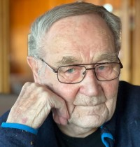

Andreas Olsen
M, #50751, f. 1844, d. 30 august 1867
Foreldre
Biografi
Andreas Olsen was also known as Andreas Ofstad.
| Sist redigert |
5 juni 2019 00:00:00 |
| Slektskap | 4-menning 3 ganger forskjøvet til Håkon Wahl |
Hartvig Andreassen Ofstad
M, #50752, f. 1866, d. 1932
Foreldre
Biografi
Hartvig Andreassen Ofstad was also known as Hartwick O. Ofstad. Han innvandret til USA i 1887.
| Sist redigert |
25 mai 2025 21:30:35 |
| Slektskap | 5-menning 2 ganger forskjøvet til Håkon Wahl |
Anna Andreasdatter
K, #50753, f. 1867
Foreldre
Biografi
| Sist redigert |
21 mai 2023 18:22:36 |
| Slektskap | 5-menning 2 ganger forskjøvet til Håkon Wahl |
Sofie Pauline Zachariasdatter
K, #50754, f. 11 januar 1879, d. 30 mars 1879
Foreldre
Biografi
Sofie Pauline Zachariasdatter ble født den 11 januar 1879 Vikna, Nord-Trøndelag. Hun døde den 30 mars 1879 Vikna, Nord-Trøndelag. Hun ble gravlagt den 18 mai 1879 Vikna, Nord-Trøndelag.
| Sist redigert |
27 februar 2020 00:00:00 |
| Slektskap | 5-menning 2 ganger forskjøvet til Håkon Wahl |
Jørgen Andreas Zachariassen Grindvik
M, #50755, f. 9 august 1873, d. 5 november 1944
Foreldre
Familie: Erikka Sofie Olsdatter (f. 14 november 1874, d. 13 oktober 1964)
| Sønn | Einar Grindvik+ (f. 5 juli 1894, d. 22 februar 1978) |
| Datter | Sofie Johanne Grindvik (f. 4 august 1896, d. 8 august 1896) |
| Sønn | Ile Grindvik (f. 11 august 1897, d. 30 mars 1956) |
| Sønn | Philip Andreas Grindvik+ (f. 20 august 1899, d. 24 juni 1999) |
| Datter | Martha Andrea Grindvik+ (f. 22 juli 1901, d. 6 april 1987) |
| Sønn | Torleif Johan Grindvik (f. 4 juli 1903, d. mai 1927) |
| Sønn | Jarle Agnar Grindvik (f. 12 april 1905, d. mai 1927) |
| Datter | Johanna Emilie Grindvik+ (f. 25 juli 1907, d. 27 januar 2005) |
| Sønn | Roald Grindvik (f. 21 september 1909, d. 21 november 1966) |
| Datter | Sara Jørgine Grindvik+ (f. 8 desember 1911, d. 27 januar 2008) |
| Datter | Elise Jørgine Grindvik+ (f. 21 desember 1915, d. 20 mai 1997) |
| Sønn | Erling Johan Grindvik+ (f. 31 juli 1919, d. 18 februar 2002) |
Biografi
Jørgen Andreas Zachariassen Grindvik ble født den 9 august 1873 Ofstad, Vikna, Nord-Trøndelag. Han giftet seg med
Erikka Sofie Olsdatter datter av
Ole Holgersen Skulestad og
Elise Jørgine Andreasdatter, den 23 juli 1894 Vikna, Nord-Trøndelag. Jørgen Andreas Zachariassen Grindvik døde den 5 november 1944 Namdal sykehus, Namsos, Nord-Trøndelag. Han ble gravlagt den 11 november 1944 Garstad kirkegård, Vikna, Nord-Trøndelag.
Jørgen Andreas Zachariassen Grindvik was also known as Jørgen Andreas Kvalø. Han ble døpt den 7 september 1873 Garstad kirke, Vikna, Nord-Trøndelag. Han ble konfirmert den 21 juli 1889 Vikna, Nord-Trøndelag. Han kjøpte før 1900 Grindvik 62/11, Lyngsnes, Vikna, Nord-Trøndelag.
| Sist redigert |
25 februar 2025 10:41:16 |
| Slektskap | 5-menning 2 ganger forskjøvet til Håkon Wahl |
Erikka Sofie Olsdatter
K, #50756, f. 14 november 1874, d. 13 oktober 1964
Foreldre
| Sønn | Einar Grindvik+ (f. 5 juli 1894, d. 22 februar 1978) |
| Datter | Sofie Johanne Grindvik (f. 4 august 1896, d. 8 august 1896) |
| Sønn | Ile Grindvik (f. 11 august 1897, d. 30 mars 1956) |
| Sønn | Philip Andreas Grindvik+ (f. 20 august 1899, d. 24 juni 1999) |
| Datter | Martha Andrea Grindvik+ (f. 22 juli 1901, d. 6 april 1987) |
| Sønn | Torleif Johan Grindvik (f. 4 juli 1903, d. mai 1927) |
| Sønn | Jarle Agnar Grindvik (f. 12 april 1905, d. mai 1927) |
| Datter | Johanna Emilie Grindvik+ (f. 25 juli 1907, d. 27 januar 2005) |
| Sønn | Roald Grindvik (f. 21 september 1909, d. 21 november 1966) |
| Datter | Sara Jørgine Grindvik+ (f. 8 desember 1911, d. 27 januar 2008) |
| Datter | Elise Jørgine Grindvik+ (f. 21 desember 1915, d. 20 mai 1997) |
| Sønn | Erling Johan Grindvik+ (f. 31 juli 1919, d. 18 februar 2002) |
Biografi
Erikka Sofie Olsdatter was also known as Erikka Sofie Grindvik. Hun was also known as Erikka Sofie Hasfjord. Hun ble døpt den 17 mai 1875 Garstad kirke, Vikna, Nord-Trøndelag. Hun eide i 1942 Grindvik 62/11, Lyngsnes, Vikna, Nord-Trøndelag.
| Sist redigert |
15 juni 2024 21:07:10 |
| Slektskap | 4-menning 3 ganger forskjøvet til Håkon Wahl |
Sigrun Karijord
K, #50757, f. 23 januar 1933, d. 8 april 2013
Familie: Gunnar Solum (f. 28 august 1929, d. 11 juni 2008)
| Datter | Gunn Solum+ (f. 6 januar 1954) |
| Sønn | Arve Solum+ (f. 16 februar 1955) |
| Datter | Mette Solum+ (f. 6 april 1963) |
| Datter | Wenche Solum+ (f. 16 april 1965) |
Biografi
Sigrun Karijord was also known as Sigrun Solum. Hun var lærer. Hun ble bisatt den 19 april 2013 Namsos kirke, Namsos, Nord-Trøndelag.
| Sist redigert |
19 mai 2014 00:00:00 |
Ile Grindvik
M, #50764, f. 11 august 1897, d. 30 mars 1956
Foreldre
Biografi
Ile Grindvik ble født den 11 august 1897 Vikna, Nord-Trøndelag. Han døde den 30 mars 1956 Vikna, Nord-Trøndelag. Han ble gravlagt den 6 april 1956 Garstad kirkegård, Vikna, Nord-Trøndelag.
Ile Grindvik brukte etter 1945 Grindvik 62/11, Lyngsnes, Vikna, Nord-Trøndelag.
| Sist redigert |
4 august 2015 00:00:00 |
| Slektskap | 5-menning 2 ganger forskjøvet til Håkon Wahl |
Philip Andreas Grindvik
M, #50765, f. 20 august 1899, d. 24 juni 1999
Foreldre
Biografi
Philip Andreas Grindvik kjøpte i 1946 Solberg 10/175, Rørvik, Vikna, Nord-Trøndelag.
| Sist redigert |
3 desember 2012 00:00:00 |
| Slektskap | 5-menning 2 ganger forskjøvet til Håkon Wahl |
Gerda Kathinka Lindseth
K, #50766, f. 1 oktober 1893, d. 27 oktober 1972
Foreldre
Biografi
Gerda Kathinka Lindseth was also known as Gerda Kathinka Grindvik. Hun ble konfirmert den 12 juli 1908 Lundring kirke, Nærøy, Nord-Trøndelag
+.
| Sist redigert |
9 januar 2018 00:00:00 |
Anders Jørgen Antonsen Lindseth
M, #50767, f. 16 oktober 1866, d. 21 april 1940
Biografi
Anders Jørgen Antonsen Lindseth var husmann og fisker Haltvik under Rørvik, Rørvik, Vikna, Nord-Trøndelag, i 1900. Han var husmann Haltvik nedre 10/25, Rørvik, Vikna, Nord-Trøndelag, før 1905. Han kjøpte i 1905 Vikket 10/27, Rørvik, Vikna, Nord-Trøndelag.
| Sist redigert |
9 januar 2018 00:00:00 |
Karoline Hjertine Knudsdatter
K, #50768, f. 16 februar 1865, d. 26 januar 1959
Foreldre
Biografi
Karoline Hjertine Knudsdatter ble født den 16 februar 1865 Rørvikengan, Rørvik, Vikna, Nord-Trøndelag. Hun giftet seg med
Anders Jørgen Antonsen Lindseth. Hun døde den 26 januar 1959 Vikna, Nord-Trøndelag. Hun ble gravlagt den 31 januar 1959 Vestre gravlund, Rørvik, Vikna, Nord-Trøndelag.
Karoline Hjertine Knudsdatter was also known as Karoline Hjertine Lindseth. Hun was also known as Karoline Gjertrud Knudsdatter. Hun ble konfirmert den 11 juli 1880 Vikna, Nord-Trøndelag.
| Sist redigert |
18 februar 2021 00:00:00 |
Martha Andrea Grindvik
K, #50769, f. 22 juli 1901, d. 6 april 1987
Foreldre
Biografi
Martha Andrea Grindvik was also known as Martha Andrea Hatland.
| Sist redigert |
8 juni 2022 00:00:00 |
| Slektskap | 5-menning 2 ganger forskjøvet til Håkon Wahl |
Gunnar Andreas Grindvik
M, #50770, f. 25 mars 1922, d. 28 januar 2017
Foreldre
Biografi
Gunnar Andreas Grindvik ble født den 25 mars 1922 Rørvikengan, Rørvik, Vikna, Nord-Trøndelag. Han giftet seg med
Gunvor Anna Horseng datter av
Kristian Albertsen Horseng og
Anne Margrethe Pauline Rennemo, den 24 august 1945 Vikna, Nord-Trøndelag. Gunnar Andreas Grindvik døde den 28 januar 2017 Steinkjer sykeheim, Steinkjer, Nord-Trøndelag. Han ble gravlagt den 7 februar 2017 Steinkjer kapell, Steinkjer, Nord-Trøndelag.
Gunnar Andreas Grindvik ble døpt den 23 juli 1922 Rørvik kapell, Vikna, Nord-Trøndelag. Han kjøpte i 1948 Sjøtun 10/241, Rørvik, Vikna, Nord-Trøndelag. Han og
Gunvor bodde Egge; Stod, Steinkjer, Nord-Trøndelag.
| Sist redigert |
9 november 2017 00:00:00 |
| Slektskap | 6-menning 1 gang forskjøvet til Håkon Wahl |
Laurits Adolf Hatland
M, #50771, f. 1874, d. 23 september 1956
Foreldre
Biografi
Laurits Adolf Hatland ble født i 1874 Vikna, Nord-Trøndelag. Han giftet seg med
Alvilde Josefine Nilsdatter datter av
Nils Jakob Paulsen og
Ane Taraldsdatter, den 9 mai 1897 Vikna, Nord-Trøndelag. Laurits Adolf Hatland døde den 23 september 1956 Vikna, Nord-Trøndelag. Han ble gravlagt den 29 september 1956 Garstad kirkegård, Vikna, Nord-Trøndelag.
Laurits Adolf Hatland var husmand (jordbrukende og fisker Hatland, Vikna, Nord-Trøndelag, i 1900.
| Sist redigert |
16 april 2018 00:00:00 |
Alvilde Josefine Nilsdatter
K, #50772, f. 28 desember 1874, d. 30 august 1958
Foreldre
Biografi
Alvilde Josefine Nilsdatter ble født den 28 desember 1874 Frelsøy, Vikna, Nord-Trøndelag. Hun giftet seg med
Laurits Adolf Hatland sønn av
Gabriel Andersen og
Beret Marie Olsdatter, den 9 mai 1897 Vikna, Nord-Trøndelag. Alvilde Josefine Nilsdatter døde den 30 august 1958 Vikna, Nord-Trøndelag. Hun ble gravlagt den 5 september 1959 Garstad kirkegård, Vikna, Nord-Trøndelag.
Alvilde Josefine Nilsdatter was also known as Alvhilde Josefine Hatland. Hun ble døpt den 2 mai 1875 Garstad kirke, Vikna, Nord-Trøndelag.
| Sist redigert |
12 august 2024 22:11:57 |
Alf Hatland
M, #50773, f. 21 mai 1926, d. 21 juli 2012
Foreldre
| Datter | Ingrid Jenny Hatland (f. 10 november 1953) |
| Sønn | Ivar Hatland+ (f. 27 juni 1959) |
Biografi
Alf Hatland ble født den 21 mai 1926 Hatland, Vikna, Nord-Trøndelag. Han giftet seg med
Birgit Jennie Larsen. Han døde den 21 juli 2012. Han ble gravlagt den 27 juli 2012 Garstad kirke, Vikna, Nord-Trøndelag.
Alf Hatland ble døpt den 15 august 1926 Vikna, Nord-Trøndelag. Han ble jordfestet den 27 juli 2012 Rørvik kirkegård, Vikna, Nord-Trøndelag.
| Sist redigert |
21 desember 2017 00:00:00 |
| Slektskap | 6-menning 1 gang forskjøvet til Håkon Wahl |
Jarlstein Torbjørn Hatland
M, #50774, f. 22 januar 1929, d. 17 november 2024
Foreldre
Familie: Bodil Marie (f. 28 oktober 1932, d. 14 februar 2020)
| Sønn | Leif Kristian Hatland (f. 20 juni 1968) |

Jarlstein Torbjørn Hatland
Biografi
Jarlstein Torbjørn Hatland ble født den 22 januar 1929 Hatland, Vikna, Nord-Trøndelag. Han giftet seg med
Bodil Marie. Han døde den 17 november 2024 Vikna, Nærøysund, Trøndelag. Han ble gravlagt den 28 november 2024 Rørvik kirkegård, Nærøysund, Trøndelag.
Jarlstein Torbjørn Hatland ble døpt den 1 juli 1929 Vikna, Nord-Trøndelag. Jarlstein bodde Rørvik, Vikna, Nord-Trøndelag, i 2009.
| Sist redigert |
21 november 2024 23:53:23 |
| Slektskap | 6-menning 1 gang forskjøvet til Håkon Wahl |
Torleif Johan Grindvik
M, #50775, f. 4 juli 1903, d. mai 1927
Foreldre
Biografi
Torleif Johan Grindvik ble født den 4 juli 1903 Lyngsnes, Vikna, Nord-Trøndelag. Han døde i mai 1927 Nord-Trøndelag. Torleif omkom, sammen med broren Jarle, Adolf Edvinsen og Einar Pedersen, under bankfiske på Sklinnabanken under nordvest kuling. Likene ble ikke finnet.
I kirkeboka er dødsdato oppført mellom 24. og 28. mai.
Torleif Johan Grindvik ble døpt den 4 oktober 1903 Vikna, Nord-Trøndelag. Han ble konfirmert den 14 juli 1918 Garstad kirke, Vikna, Nord-Trøndelag. Presten ga karakteren "temmelig godt" for konfirmantens kristendomskundskap m.v.
| Sist redigert |
14 juli 2022 23:49:26 |
| Slektskap | 5-menning 2 ganger forskjøvet til Håkon Wahl |
{kind=link}